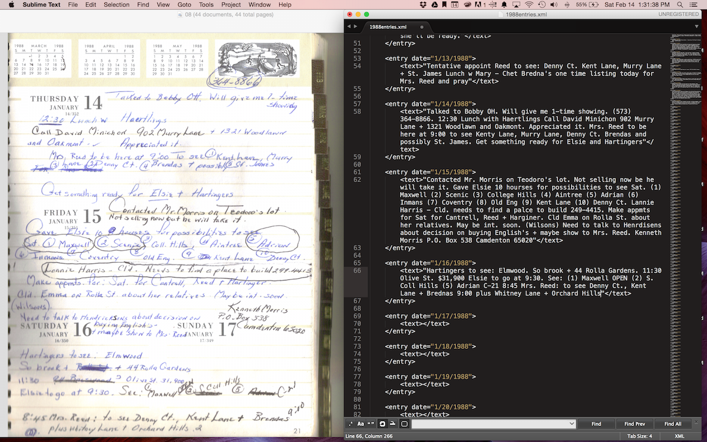
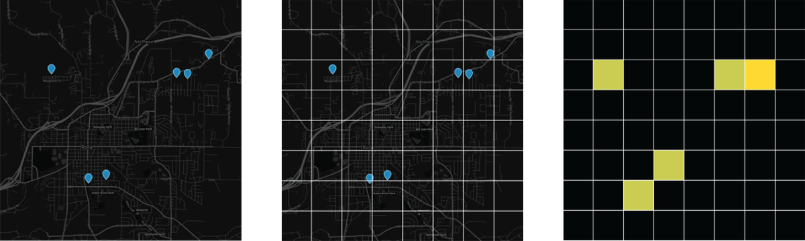
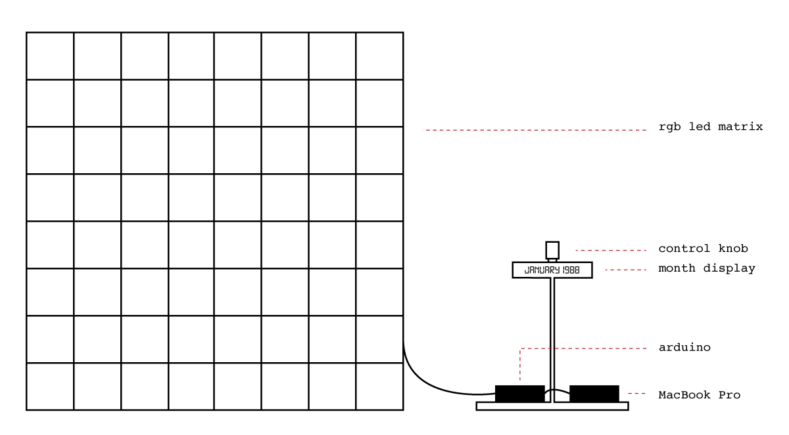
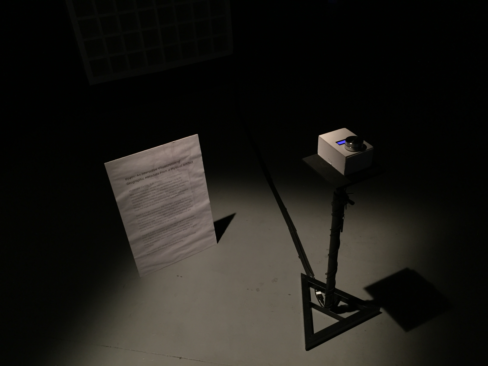

USC Media Arts Honors Thesis Project
Fall 2014 - Spring 2015
The project
"65401" is an interactive installation that visualizes the life of a real estate agent in a rural Missouri town in 1988 through metadata taken from her datebook.
Abstract
Now more than ever, people interested in quantifying life experiences have access to an unprecedented deluge of information about their own personal health, travel and communication patterns. Lifelogging projects in the connected age analyze and visualize these rich trails of data that are a byproduct of life online.
Unlike most lifelogging projects, however, this installation interprets metadata extracted from a physical, non-digital artifact. 65401 is an interactive visualization of a small town in the Ozark mountains generated from the personal datebook my grandmother used when she worked as a real estate agent in the 1980s. Viewers use a tangible interface to generate a map of the town based off addresses, phone numbers and locations mentioned in this journal.
The goal of this installation is to map this geographic metadata in a public gallery context without revealing any of the diary’s original contents. The project explores data visualization theory, crowdsourced human intelligence, the limits of computer vision, and the interaction design of tangible interfaces.
There is a kind of magic to a map... We explore an area, we document it. And in doing so we create a thing, an artifact, that outlines and represents our understanding of that space.
- Ethan Marcotte
Background
The process of visualizing intangible data in physical installations is an exciting and relatively new area of study. This installation process has been informed and inspired by the following projects.
Immaterials Light Painting
Creators: Timo Arnall, Jørn Knutsen and Einar Sneve Martinussen
"This project explores the invisible terrain of WiFi networks in urban spaces by light painting signal strength in long-exposure photographs. A four-meter tall measuring rod with 80 points of light reveals cross-sections through WiFi networks using a photographic technique called light-painting."
More info: Yourban.no
ecloud
Creators: Aaron Koblin, Nik Hafermaas, and Dan Goods
"The eCLOUD is a dynamic sculpture inspired by the volume and behavior of an idealized cloud. Made from unique polycarbonate tiles that can fade between transparent and opaque states, its patterns are transformed periodically by real time weather from around the world."
More info: The ecloud Project
Feltron Annual Reports
Creators: Nicholas Felton
"Nicholas Felton spends much of his time thinking about data, charts and our daily routines. He is the author of many Personal Annual Reports that weave numerous measurements into a tapestry of graphs, maps and statistics reflecting the year’s activities."
More info: The office of Feltron
Listening Post
Creators: Mark Hansen and Ben Rubin
"In Listening Post, viewers are immersed in a sonification and visualization of thousands of simultaneous conversations happening on the internet at that moment in real-time. An arched wall of hundreds of small screens display ever-changing text in a cool glowing blue. Electronically-generated voices in both a pitched-monotone and natural-inflection sing out the text from every corner of the room singly, overlapping, or in strange harmonies."
More info: Modes.io
Process
Data entry methods
Extracting the data to be visualized for my project was a time consuming endeavor. During this phase of the project, I discovered that optical character recognition software doesn't work with handwritten letters. Although I have access to journals from 1988, 1989 and 1990, I found that I would only have enough time to encode and visualize one of these years. My challenge was to encode 300 JPG scanned images of handwritten notes with scribbles, doodles and coffee stains into something that can be parsed by a computer.
I turned to Amazon Mechanical Turk to try to minimize the hours I would spend hand copying her notes into a XML document. I funded my AMT account with $10 and created 43 Human Intelligence Tasks. I created an HTML template that would show the image I needed transcoded on the left side of the screen and fields to input text dates and entry values. Only 5 of 43 were submitted, however, so I had to try another strategy to finish the project.
Prototypes
Prototype 1
Once the information was organized in a digital file, I was able to explore several data visualization strategies. Before I knew I wanted to focus on geographic information, I first created a test visualization that shows word count per entry in my grandmother's diary from January 1986. Each column represents one entry and each dot in that row represents a word.
I went about making this visualization to figure out how I should structure my data within a JSON file so it can be parsed and visualized procedurally. Since the project involves so much hand transcribing of information, I needed to make sure that I wanted to use the D3.js library to do the heavy lifting for me in generating visualizations.
Prototype 2
The visualization above looked at the frequency of times my grandmother mentioned a location in her journal, but it didn't give any sense of what that location looked like. For my second prototype, I wanted to viscerally connect the audience to the real locations my grandmother mentioned in her diary. For each address or street mentioned, I entered the location into Google Maps street view, zoomed out as far as I could and took a screenshot. After compiling all of these ../images, I used Adobe Photoshop's Batch Processing function to crop out all interface elements, resize the image to a manageable size and apply a black and white filter.
Next, I created a processing sketch that lets viewers interact with a timeline from January 1 - March 31, 1988. If my grandmother visited a location on the selected date, an image from Google Maps street view is shown. If she visited multiple locations, photos of each location are layered in the same window.
View on GithubPrototype 3
A third prototype during the exploration period of this project involved designing a system that compared the geographic metadata of individual entries to the textual information contained within each entry. To accomplish this, I created a new processing sketch with two modes. After a user selects an entry date, they can toggle between the non-redacted version of the date in question or the version redacted to just geographic information.
This prototype showed that many of the entries from my grandmother's diary do not reference specific locations. This discovery informed my decision to visualize location data in weeks and months, not days.
Prototype 4
As I was working on the third prototype, I noticed that my grandmother’s entries often contained 10 digit sequences of numbers. After looking a few of them up, I uncovered that many of these were long distance telephone numbers to area codes outside of the state of Missouri. After getting a CSV with each date and phone number, I used Whitepages' Pro Graph API to map the phone numbers to specific addresses if possible and to zip codes if necessary. In the MapBox visualization, lines with lower opacity represent calls made only one time, while lines with higher opacity represent calls made multiple times.
Prototype 5
The final section of the project I worked on was organizing all addresses mentioned in the 1988 datebook into a comprehensive geoJSON file. Each location can now be given an infinite number of specific attributes, such as week or month visited, associated clients or styling information.
I finally settled on an 8x8 grid visualization to map the locations that my grandmother mentioned in her journal. Presenting the information with such low fidelity represents the inexact nature of the handwritten data set and data extraction process.
I've included an example of this process above. For each week, I plotted all points from the dataset into a Mapbox project, broke the map into 64 equally-sized portions and encoded each section with a color in accordance to the frequency of locations mentioned that week.
Final Visualization
Interface Blueprint
The final part of the project involves building the physical installation and coding the interactive interface. To reflect the fact that the information being visualized was originally stored in a physical artifact, I wanted my interface to be uniquely tactile. Viewers will navigate throughout time by twisting a physical control knob. The number of the current week is displayed next to the control knob using a 7-segment display board.
Build Process
Programming the date selector
The battery-powered control dial that users use to select the month being visualized connects to a Processing sketch over bluetooth low energy. The processing sketch talks to an LED display connected to an arduino board over serial and prints the month being visualized.
Assembling the matrix
To create the grid on which the visualization will be displayed, I used an 8x8 grid of RGB LEDs. I attached foam board to the back of the shelf to easily mount and adjust the LEDs.
Wiring the LEDs
Each LED is connected to the matrix using a wire wrapping technique. I chose to wire wrap over solder each LED together because it elimnates the possibility of damaging or destroying LEDs. Additionally, using wire wrapping makes repairing easier because the wrapping can be undone quickly.
Connecting the LEDs to Arduino

The rows and columns of the LED matrix interface with the Arduino Uno through a RGB matrix shield called a Colorduino. The Arduino is then connected to a MacBook running a processing sketch. This part of the project was heavily influenced by an open source project by @Lincomatic.
Checking the LEDs

After wiring the LEDs together and connecting each strand to the Colorduino, I uploaded an open source program to check if each LED was working and addressable.
Assembling the controller enclosure

After wiring the LEDs together and connecting each strand to the Colorduino, I uploaded an open source program to check if each LED was working and addressable.
Installation in the sound stage

The days leading up to the thesis showcase involved lots of last minute troubleshooting, multiple runs to True Value and some delirious caffeine dreams.
The Final Project
The project was installed at the USC School of Cinematic Arts during the Media Arts + Practice thesis showcase from May 10 - 13. Since this was my first time designing an interactive installation, I learned a lot about designing phsyical things. After watching my visitors interact with the map, it was clear I should have paid more attention to the control dial. Even with the feedback of the small LCD screen, the continuous scroll of the mechanism confused viewers. After scrolling to the end of the year, they continued twisting the dial, making it appear broken. A knob with tactile notches for each month would have been much more effective.
If I could have more time to rebuild the project, I would have made it smaller and brighter and I wouldn't have messed with retrofitting it into a preexisting cabinet. It could have been much more precise if I had built the frame out of wood and laquered it myself.
Still, this thesis project was a joy because it gave me a chance to work with my hands and build something tangible. I can't wait to work on the next installation project!



I think of my datebook as an external information organ, a piece of my brain made out of paper instead of cells.
- Michelle Hublinka
Works cited
The following pieces have inspired the development of this research design venture. Special thanks to Virginia Kuhn, Elizabeth Ramsey, Sonia Seetherman, Raphael Arar and Michael Bodie for guiding this design process.
Installations
- Big Bang Data, Centre de Cultura Contemporania de Barcelona. 2014.
- Listening Post, by Mark Hansen and Ben Rubin. 2001.
- (+/-) Pendulum, by Raphael Arar. 2014.
- eCloud, by Aaron Koblin, Nik Hafermaas and Dan Goods. 2010.
- Immaterials Light Painting, by Timo Arnall, Jorn Knutsen and Einar Sneve Martinussen. 2011.
Writing
- Evocative Objects, Cherry Turkle. 2007.
- The Visual Display of Quantiative Information, Edward Tufte. 1983.
- The Annual Report of Feltron, #8 and #9, Nicholas Felton. 2012-2013.